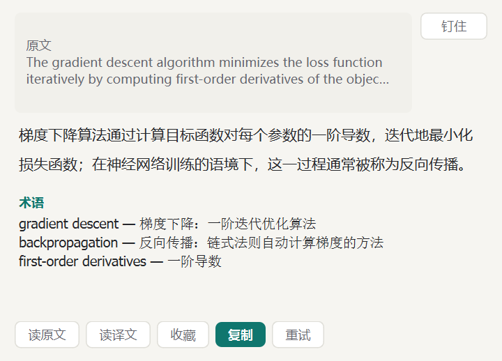
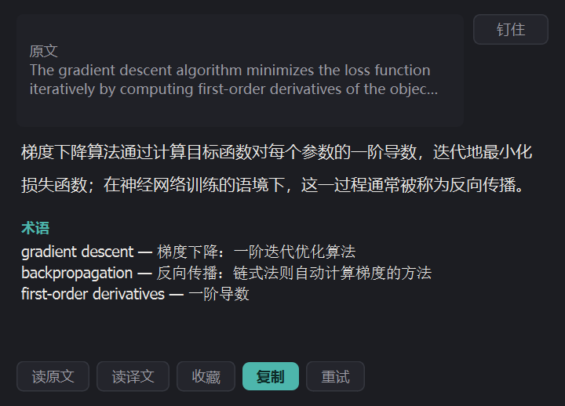
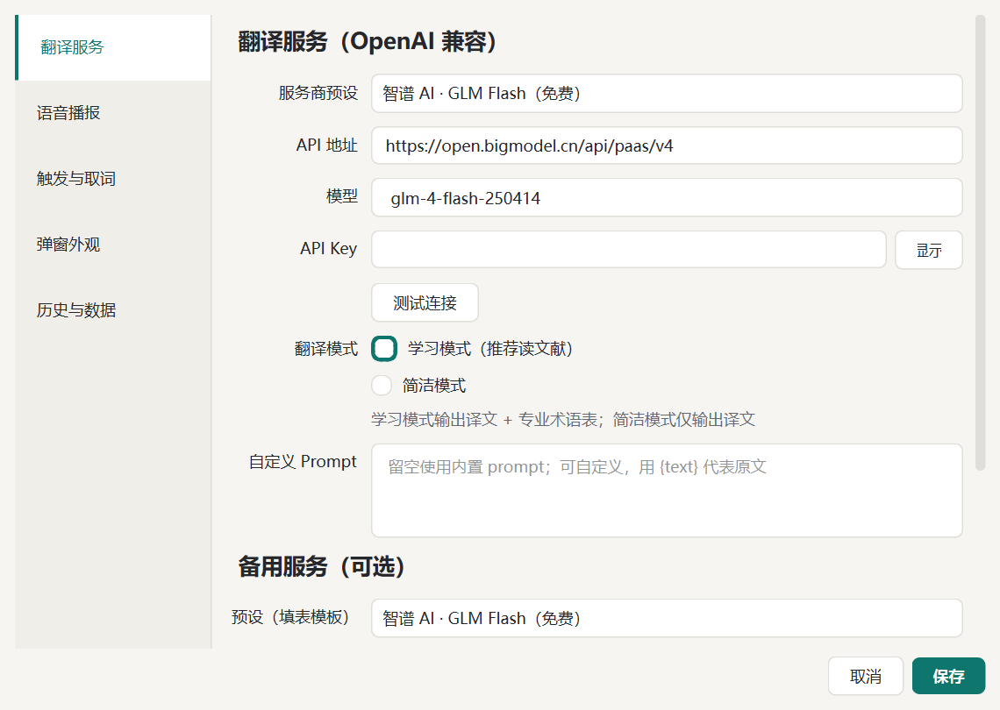
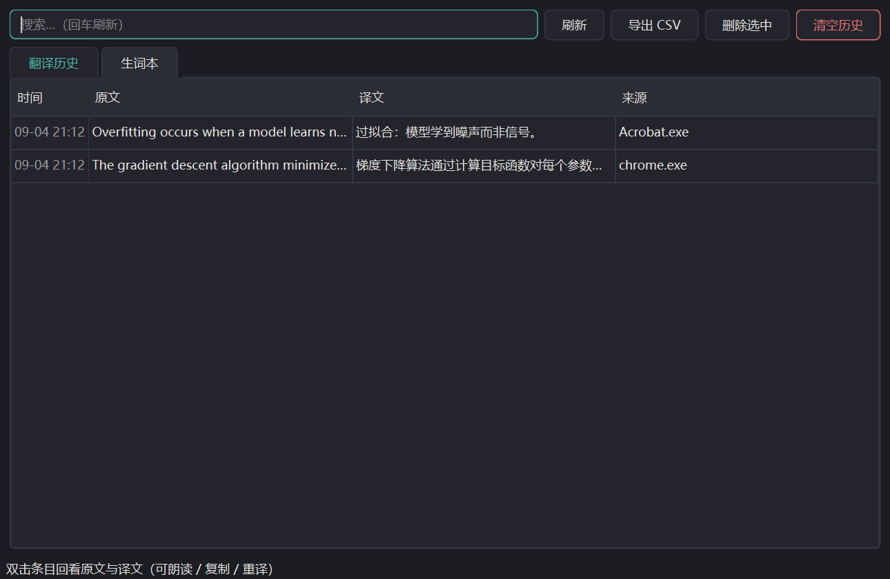

读英文文献和网页时的桌面翻译工具——大模型流式翻译，带术语表、生词本和语音播报，常驻系统托盘。

浅色主题 · 学习模式（译文 + 术语表）

深色主题 · 同一弹窗
为「读文献、查术语、攒生词」这条路做的取舍，其余功能都往后站。
全局键盘钩子 + 状态机判定，和 Ctrl+C / Ctrl+V 等组合键互不干扰。判定间隔可调，触发键可换 Alt / Shift，也可整体停用。
OpenAI 兼容协议，内置智谱 GLM Flash（免费）、DeepSeek、硅基流动、OpenRouter、Gemini 预设；主服务失败自动切换备用服务重发。
译文之外附带专业术语对照，每条术语一键 ☆ 收藏进生词本，读文献场景直接可用。
SQLite 本地存储，支持搜索、按来源应用筛选、导出 CSV（可直接导入 Anki），双击条目回看原文译文。
edge-tts 读原文 / 读译文（失败自动降级系统语音）；相同文本重复划词零请求零等待。
优先 UI Automation 直读选中文字，不碰剪贴板；降级模拟复制时会完整保存并恢复剪贴板内容。
弹窗跟随鼠标、钉住防误关、深浅双主题、开机自启（免管理员）、单实例保护、内置代理设置、自动检查更新。
服务商、模型、Prompt、触发键、代理、TTS 音色，全在一处配置；生词本按来源可查。

设置 · 翻译服务

生词本与历史 · 深色
下载 exe 双击运行，程序常驻系统托盘（可能被折叠到托盘溢出区）。
下载 CtrlTranslate.exe也可以从源码运行：pip install -r requirements.txt 后执行 python main.py，详见 README。